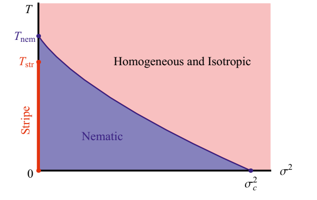
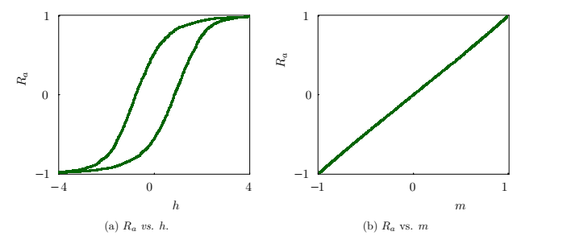
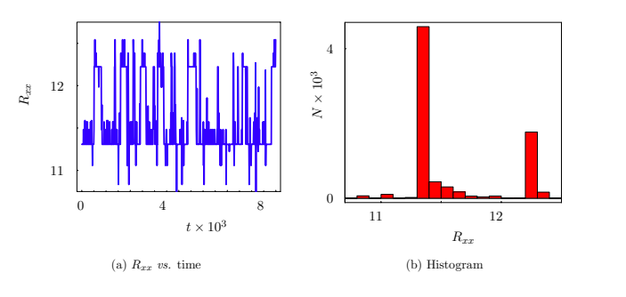
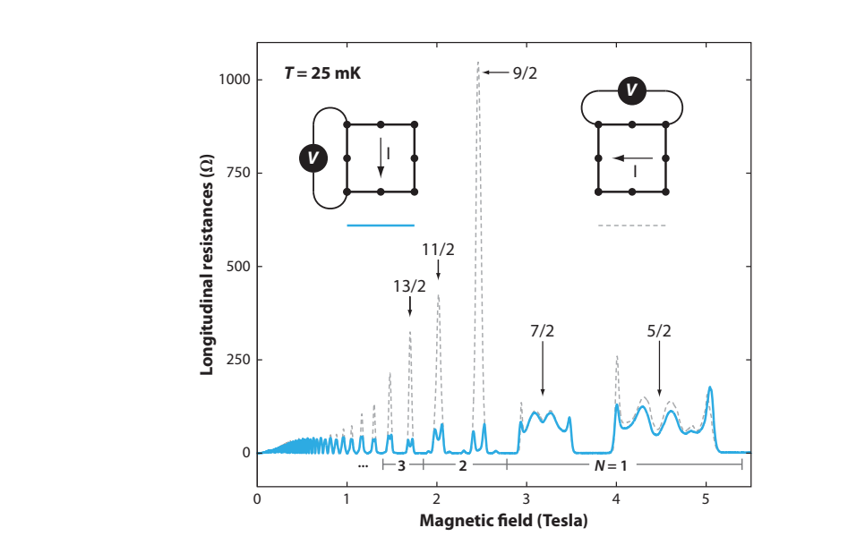
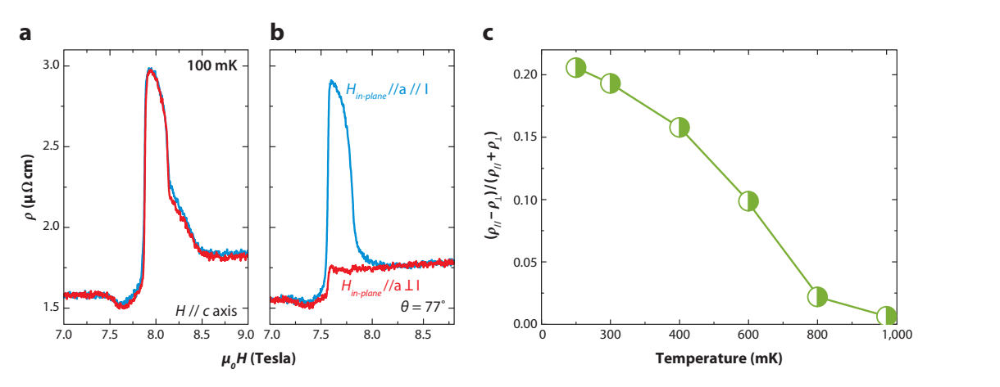
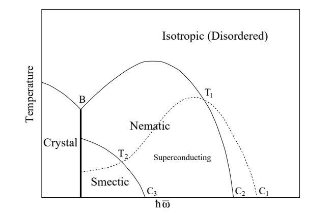

Orientation is the order.
Nematic correlations prefer an axis; they do not require a periodic density wave.
Electronic liquid crystals · Topic 01
Six papers. One connected picture of nematicity, stripes, unusual metals and the disorder that ties them together.
Nematic correlations prefer an axis; they do not require a periodic density wave.
Melt the position of stripes, or distort the Fermi surface of a metal.
Local directionality may cancel when you average over a whole sample.
The organizing definition: Fradkin 2010 · PDF pp. 3–7. This guide connects the supplied sources; interpretations labeled “our synthesis” are explanatory connections.
01 · The core idea
Ask two separate questions: is there a preferred axis, and does the density repeat in space?
Translation symmetry is preserved; the axis-interchange symmetry is broken.
Schematics of symmetry and correlations, not pictures of elongated electrons. The headless line segments stand for a preferred correlation axis; their drawing grid is not charge order. The checkerboard shown is a C₄-symmetric density wave in both directions. Ideal clean states are assumed.
Kivelson 1997 preprint · PDF pp. 1–4 Fradkin 2010 · PDF pp. 3–7 Nie 2014 · PDF p. 1
For a nematic director, θ and θ + 180° describe the same state. A 90° turn exchanges the two axis choices. Nematicity concerns rotation symmetry; superconductivity concerns a different order parameter.
02 · Two complementary routes
Real space · Kivelson 1997
The stripe pattern loses long-range positional order while its axis preference remains. This gives a nematic.
A proposed melting route, not a universal sequence of transitions. Dislocations matter at the stripe–nematic boundary.
Kivelson 1997 preprint · PDF pp. 3–4 Fradkin 2010 · PDF pp. 5–6
Momentum space · Oganesyan 2001
A quadrupolar interaction makes the symmetric metal unstable to an axis-dependent distortion: a Pomeranchuk instability.
Continuum illustration. Real lattice Fermi surfaces need not be circles or ellipses.
Try it · a geometric model
Stretch the Fermi surface, then turn its director. The enclosed area stays fixed.
This is a constant-area ellipse, not a band calculation. Its area is fixed by construction. A lattice can pin the director; the continuum picture allows it to turn freely.
Dynamic exponent of the soft critical mode in the paper's Gaussian theory.
Generic one-loop scattering rate in the continuum nematic; principal-axis points are special.
Lattice anisotropy can remove the Goldstone mode and restore Fermi-liquid behavior at very low energy.
These are model and approximation-specific results. The paper does not settle the ultimate low-energy state beyond its perturbative treatment. Oganesyan 2001 · PDF pp. 3–5
03 · Inside the Cu–O plane
Kivelson, Fradkin and Geballe find a nematic regime in the three-band Emery model at strong coupling.
At the model's x = 1 endpoint, every unit cell can choose the same oxygen orientation. Cells stay equivalent, but x and y become inequivalent.
Oₓ is occupied; Oᵧ is empty. This is a uniform nematic insulator in the model.
Filled circles indicate holes, not electron density. x = 1 means two holes per Cu unit cell in this model; it is not a typical experimental cuprate doping. This endpoint has a charge gap, so the drawing does not depict conducting channels.
At small doping in the strict limit, turning out of a row costs strong O–O repulsion.
At low x, repulsion between row and column carriers can favor choosing one orientation.
The proof takes tpp = 0 and very strong interactions. Real cuprates have finite O–O hopping.
Kivelson 2004 · PDF pp. 2–5 Exact one-dimensional dynamics need not survive corrections; nematic symmetry breaking can remain.
04 · What survives disorder?
A density wave needs its peaks to line up over long distances. A nematic only needs a persistent preference between the two axes.
Vestigial nematic is possible
ψₓ and ψᵧ describe density modulation along x and y. N is a composite measure of which modulation is stronger. Broken-up stripes illustrate correlations, not an experimental image or a simulated phase boundary.
Regime cartoons assume low temperature and an incommensurate CDW that favors stripes. “Weak” and “strong” have no calibrated values here. In strict 2D, any nonzero random field prevents macroscopic Ising nematic long-range order; finite domains can still look oriented.

The authors explicitly identify their saddle point's ordered solution in disordered strict 2D as an artifact. Layer coupling is essential to the finite-disorder long-range-order argument.
They also distinguish incommensurate CDWs from commensurate ones: discrete translation breaking can survive weak disorder in circumstances where the incommensurate phase cannot. Nie 2014 · PDF pp. 4–5
05 · How would you see it?
Try changing the balance of local nematic domains. A weak orienting field can help expose a response that cancels in an unaligned sample.
Tap a patch to rotate it. The line is a headless nematic axis.
Finite 6 × 6 teaching grid. We compute m = Σσᵢ / 36 exactly. Carlson et al. find Rₐ ≈ m for typical configurations in their resistor-network calculation. This widget does not solve that network and is not a prediction of measured resistance.
Carlson 2006 · PDF pp. 1–4 Domain configuration, measurement geometry and finite size affect the relation to transport.
Transport · dynamics

Resistance anisotropy can trace orientational hysteresis. Correlated clusters can give slow, telegraph-like switches in small samples.

Monte Carlo time is not measured seconds. The cited YBCO nanowire experiment and this model example are distinct. Noise alone is not unique evidence for nematicity. Carlson 2006 · PDF pp. 3–4
NMR · a focused connection
Nie et al. propose comparing the quadrupolar broadening of the in-plane oxygen NMR lines and their response to an orienting strain.
Our synthesis for NMR/NQR reading: structural inequivalence, domains and powder orientation averaging must be accounted for. A broad powder Cu NQR line or a relaxation anomaly does not by itself isolate in-plane nematic symmetry. No spectrum is invented here.
Orthorhombicity already distinguishes x from y. A nonzero directional response in such a crystal can include that background; temperature dependence, controlled field response and complementary probes help identify the electronic tendency. For LBCO's LTT phase, the favored stripe direction can alternate by 90° between planes.
06 · From symmetry to materials
The 2010 review connects clean demonstrations with more complicated cuprate evidence. These examples are historical results reported in that review.
Quantum Hall · GaAs/GaAlAs

The review's ν = 9/2 example has a directional resistance ratio around 100. The response weakens strongly with temperature and can be reoriented by an in-plane field.
Device geometry affects resistance; converting it into resistivity requires care. These are not cuprate data.
Bilayer ruthenate · Sr₃Ru₂O₇

A phase appears around 7.8–8.1 T, reaching about 1.2 K. Transport and bulk thermodynamics together support a distinct phase; the magnitude of anisotropy remains a microscopic challenge in the review.
The field aligns domains and also affects electronic structure. This is not a generic field scale for nematicity.
07 · The six-paper map
Read the main idea, then open the optional detail or jump directly to the source page.
Showing all 6 papers.
No papers match. Try a broader term or clear the filters.
Melting stripes
Kivelson, Fradkin & Emery · 1997 preprint · 5 PDF pages
Stripes can lose their positional order while retaining a preferred direction. That intermediate state is an electronic nematic.
See → explain → test
Picture 1 / 4
Look for: Compare repeated vertical density bands with their preferred axis.
A stripe or smectic has finite-wavevector positional order and an orientation.
Check the argument in the original: PDF pp. 1–2 ↗
Picture 2 / 4
Look for: Follow two bent stripes and their unequal arc lengths.
Transverse fluctuations can spoil interstripe density-wave phase locking. Local correlations on each stripe need not disappear.
Check the argument in the original: PDF pp. 2–3 ↗
Picture 3 / 4
Look for: Compare finite-wavevector density mismatch with uniform pair-phase transfer.
Josephson pair transfer lacks the same arc-length oscillatory factor. Nearby fluctuating stripes can enhance its average strength.
Check the argument in the original: PDF pp. 2–3 ↗
Picture 4 / 4
Look for: Compare the regular bands with aligned objects lacking a common spacing.
The nematic remnant breaks orientational symmetry while translation symmetry can be restored.
Check the argument in the original: PDF pp. 3–4 ↗
Predict before revealing
Choose an answer, then compare the reasoning.
Orientation and position are separate orders. Transverse motion can dephase finite-wavevector density locking while pair transfer behaves differently. The perturbative stripe mechanism and later symmetry-based melting discussion have different levels of control.
Nematic orientation without translational stripe order. Orientation and position are separate orders. Transverse motion can dephase finite-wavevector density locking while pair transfer behaves differently. The perturbative stripe mechanism and later symmetry-based melting discussion have different levels of control.
Can an array of conducting stripes avoid locking into an insulating charge-density wave, and instead support a conducting or superconducting liquid crystal?
A two-dimensional array of metallic stripes in a doped antiferromagnet; the main calculation assumes a spin gap on each stripe. Nd-doped LSCO, LSCO and YBCO enter as experimental motivation, not new measurements.
A theory of coupled elastic strings and one-dimensional charge modes. The authors average over transverse quantum fluctuations and analyze interstripe CDW and Josephson couplings perturbatively.
Authors' proposal: electronically generated stripes are light enough to fluctuate strongly, creating phases that conventional heavy molecular solids would not readily support. Their cuprate interpretation is suggestive and explicitly allows alternative readings of the neutron peaks.
Our synthesis: this is the clearest starting point for separating stripe position, stripe orientation and superconducting phase coherence.

All five PDF pages inspected in text; substantive argument on pp. 1–4. Figures 1 and 2 visually checked. Stored file is arXiv:cond-mat/9707327v1, dated 30 July 1997; the later Nature paper is cited as 1998 by other sources in this set. The generated manuscript header also shows 2018, so the source version is identified explicitly.
The starting objects are conducting stripes with one-dimensional charge modes and transverse quantum motion. A charge modulation has a phase along the stripe’s actual arc length. Bending neighboring stripes differently produces a growing mismatch of those arc lengths. The corresponding density-wave phases then lose their interstripe locking advantage after averaging over fluctuations. This argument concerns finite-wavevector translational order; it does not erase the local charge correlations on each stripe.
Josephson pair transfer behaves differently because it locks superconducting phases without the same arc-length oscillatory factor. Close approaches of fluctuating stripes can enhance its average strength. The competition between density locking and pair transfer is therefore selective, rather than a generic statement that motion destroys every order. Follow the charge parameter Kc and the assumed spin gap before applying the superconducting criterion. A nematic can result from losing positional order while retaining orientation, but the later melting diagram uses symmetry arguments beyond the perturbative stripe calculation.
PDF pp. 1–3 ↗State the model assumptions, name the symmetry being broken, and distinguish the calculated result from the proposed material interpretation. Then compare the limitations in the paper note above.
Distorting a metal
Oganesyan, Kivelson & Fradkin · 2001 · arXiv v2 · 7 PDF pages
A metal can become nematic by spontaneously distorting its Fermi surface. Its soft orientational mode can strongly disrupt ordinary quasiparticles.
See → explain → test
Picture 1 / 4
Look for: Compare a circle and a quadrupolar deformation.
The Fermi surface can select a direction while translation symmetry survives.
Check the argument in the original: PDF pp. 1–2 ↗
Picture 2 / 4
Look for: Follow a shape fluctuation into particle–hole excitations.
Landau damping makes a collective mode broad rather than a clean oscillation.
Check the argument in the original: PDF pp. 2–4 ↗
Picture 3 / 4
Look for: Read the one-loop |ω|²ᐟ³ decay beside ω² on teaching axes.
The generic low-energy scattering rate threatens a simple quasiparticle description. Angular zeros are exceptions, not a uniform rate.
Check the argument in the original: PDF pp. 3–5 ↗
Picture 4 / 4
Look for: Compare freely rotated ellipses with crystal-pinned axes.
Continuum rotational symmetry and lattice symmetry give different very-low-energy limits.
Check the argument in the original: PDF pp. 4–5 ↗
Predict before revealing
Choose an answer, then compare the reasoning.
The continuum nematic mode couples to gapless particle–hole excitations. The source’s critical theory has overdamped z = 3 behavior; special directions and a crystal lattice require separate treatment.
No: coupling to particle–hole excitations can overdamp it. The continuum nematic mode couples to gapless particle–hole excitations. The source’s critical theory has overdamped z = 3 behavior; special directions and a crystal lattice require separate treatment.
What happens to collective modes and single-electron excitations when an isotropic Fermi liquid becomes a nematic metal?
Primarily spinless fermions in a rotationally invariant two-dimensional continuum with a quadrupolar interaction. Three-dimensional and lattice extensions are discussed; no particular cuprate composition is calculated.
Introduce a symmetric traceless quadrupolar field, integrate out fermions, find saddle points, compute Gaussian collective modes, then calculate the one-loop electron self-energy.
Authors' conclusion: damping by the particle-hole continuum signals breakdown of the Fermi-liquid expansion over most of the continuum nematic Fermi surface. They do not settle whether the ultimate low-energy state remains a non-Fermi liquid or develops another order.
Our synthesis: this supplies the momentum-space route and explains why a nematic metal can have unusual dynamics even without a static stripe density wave.
All seven PDF pages inspected in text; argument on pp. 1–6, with references extending to p. 7. Figure 1 and Eqs. 17–22 visually checked. Stored source is arXiv:cond-mat/0102093v2, dated 7 June 2001; its generated header also shows 2018.
A quadrupolar deformation changes the shape of the Fermi surface while preserving translation symmetry. The important distinction is between the static energetic cost of the deformation and the dynamics of a spatially varying fluctuation. Integrating over gapless particle–hole excitations produces Landau damping. Consequently a soft collective mode need not be a sharp propagating wave; its spectral weight can be broad even near zero frequency.
The z = 3 scaling follows the balance of stiffness and damping in the critical theory. The one-loop electron scattering rate with a two-thirds power falls more slowly with energy than an ordinary quasiparticle rate, so the lifetime can become inadequate for a simple Landau description. The angular factor matters: the special axes are exceptions, not proof that the generic rate applies everywhere. Continuous rotational symmetry supports an orientational Goldstone mode; a lattice supplies an orientational restoring force and a low-energy crossover. Keep those continuum and crystal statements separate when relating the theory to experiment.
PDF pp. 2–5 ↗State the model assumptions, name the symmetry being broken, and distinguish the calculated result from the proposed material interpretation. Then compare the limitations in the paper note above.
A microscopic mechanism
Kivelson, Fradkin & Geballe · 2004 · Physical Review B · 7 PDF pages
A square-symmetric Cu–O model can produce one-dimensional charge motion and spontaneously choose rows over columns.
See → explain → test
Picture 1 / 4
Look for: Distinguish Cu sites from bond-centered x and y oxygen sites.
The three-band structure provides inequivalent directional participation without requiring a new translation period.
Check the argument in the original: PDF pp. 1–2 ↗
Picture 2 / 4
Look for: Compare row motion and column motion in the simplified limit.
Strong repulsion and zero direct O–O hopping restrict allowed trajectories. These restrictions belong to the projected model.
Check the argument in the original: PDF pp. 2–3 ↗
Picture 3 / 4
Look for: Follow x² and x³ toward the dilute limit.
The crossing-energy penalty can outrun the one-dimensional Fermi-pressure gain at small x if its coefficient is positive.
Check the argument in the original: PDF pp. 3–4 ↗
Picture 4 / 4
Look for: Compare the ideal projected model with the extra terms in a material.
Real hopping, higher-order motion and Coulomb effects require new stability checks. The x = 1 endpoint has total hole count 1 + x.
Check the argument in the original: PDF pp. 3–4 ↗
Predict before revealing
Choose an answer, then compare the reasoning.
For 0 < x < 1, x² exceeds x³. In the source’s controlled limit, a positive crossing penalty can therefore dominate the Fermi-pressure term at sufficiently small x. Coefficients and regime remain essential.
x² For 0 < x < 1, x² exceeds x³. In the source’s controlled limit, a positive crossing penalty can therefore dominate the Fermi-pressure term at sufficiently small x. Coefficients and regime remain essential.
Can a microscopic model with fourfold symmetry be shown to support a nematic ground state in a controlled limit?
The three-band Emery model on a Cu–O plane: Cu sites form a square lattice and O sites occupy bond centers. x is additional holes per Cu unit cell, with total hole count 1 + x; this model's x = 1 endpoint is not ordinary experimental cuprate doping.
Project into a low-energy subspace at strong repulsion with direct O–O hopping tpp = 0. Prove row/column quasiparticle conservation to leading order and exploit one-dimensional solutions; map a classical limit to an Ising model.
Authors' conclusion: nematicity exists in a controlled strong-coupling regime of a plausible cuprate model. This establishes a mechanism and an existence result, rather than demonstrating that real cuprates occupy this exact parameter regime.
Our synthesis: it shows why a nematic need not be literally a collection of visibly separated stripes, and why 'nematic' specifies symmetry more broadly than 'nematic Fermi fluid'.
All seven PDF pages inspected in text, including the appendix. Figures 2 and 3 visually checked. Published 8 April 2004; DOI 10.1103/PhysRevB.69.144505.
The three-band model includes copper and bond-centered oxygen sites, so choosing horizontal versus vertical oxygen participation can break rotational symmetry without introducing a new translation period. The projection to strong repulsion and vanishing direct oxygen–oxygen hopping simplifies charge trajectories. Conservation of the allowed row and column quasiparticle structures is part of that projected theory, rather than a generic law of every Cu–O plane.
At small x compare powers before comparing coefficients: the crossing penalty scales as x² while the one-dimensional Fermi-pressure term scales as x³. For sufficiently small x the former dominates if its coefficient is positive, making a directional configuration favorable. This is a useful mechanism, not a numerical phase boundary at experimental optimal doping. The x = 1 nematic insulator is another model endpoint, with total hole count 1 + x. Real oxygen hopping, higher-order motion and long-range Coulomb forces change the ideal limit; their inclusion requires a fresh stability calculation.
PDF pp. 1–4 ↗State the model assumptions, name the symmetry being broken, and distinguish the calculated result from the proposed material interpretation. Then compare the limitations in the paper note above.
Domains leave a signal
Carlson, Dahmen, Fradkin & Kivelson · 2006 · Physical Review Letters · 4 PDF pages
Local nematic domains can reveal themselves through hysteresis and slow resistance noise even when their average orientation cancels.
See → explain → test
Picture 1 / 4
Look for: Compare horizontal and vertical patches, not up/down Cu spins.
The local variable identifies a nematic axis. It is not a microscopic magnetic moment.
Check the argument in the original: PDF pp. 1–2 ↗
Picture 2 / 4
Look for: Look at a pinned patch inside an interacting group.
Local random fields, uniform alignment and interpatch coupling create metastable configurations.
Check the argument in the original: PDF pp. 2–3 ↗
Picture 3 / 4
Look for: Follow current through two configurations with similar average alignment.
Spatial connectivity matters. Mean orientation can correlate with resistance anisotropy without determining it exactly.
Check the argument in the original: PDF pp. 2–4 ↗
Picture 4 / 4
Look for: Follow a field sweep and two switching states.
Hysteresis and correlated noise are proposed signatures. They are not uniquely nematic and the time axis needs its own model.
Check the argument in the original: PDF pp. 3–4 ↗
Predict before revealing
Choose an answer, then compare the reasoning.
The paper links an orientation model to a resistor network. Simulation steps order the calculation; they do not set an experimental clock. Telegraph noise and hysteresis also need alternative fluctuators and geometry considered.
No: a kinetic model and calibration are required. The paper links an orientation model to a resistor network. Simulation steps order the calculation; they do not set an experimental clock. Telegraph noise and hysteresis also need alternative fluctuators and geometry considered.
How can one detect local nematic tendencies in a disordered sample without macroscopic orientational long-range order?
A two-dimensional square-lattice model of nematic patches with two orientations, random local orienting fields, ferromagnetic alignment coupling J and an applied orienting field h. LSCO hysteresis and YBCO nanowire noise are motivating observations from other experiments.
Glauber updates of a random-field Ising model plus a resistor network for each patch configuration. Macroscopic resistances are calculated with a bond-propagation algorithm.
Authors' proposal: test transport hysteresis, cluster noise and anticorrelated fluctuations of Rxx and Ryy to look for nematic domains. The paper connects a domain model to measurable quantities; it does not establish that every noise event is nematic.
Our synthesis: domain averaging can hide a signal. A controlled orienting field and the dynamics of domains can expose information that a single zero-field anisotropy value misses.
All four PDF pages inspected in text. Figures 2–4 and the resistance-anisotropy normalization visually checked because extracted mathematical glyphs were unreliable. Published 7 March 2006; DOI 10.1103/PhysRevLett.96.097003.
The Ising variable labels the orientation of a local nematic patch; it does not represent a microscopic Cu spin. Neighboring variables interact, local random fields pin them, and a uniform field aligns their preference. The electrical observable is then obtained by solving an anisotropic resistor network associated with that configuration. A mean orientation can correlate well with resistance anisotropy without determining it exactly, because spatial connectivity matters.
Hysteresis means the configuration retains history while the field is swept. Return-point memory compares a return to a previously visited extremum; incongruent minor loops can reveal interactions. Telegraph noise records switches between metastable configurations, possibly involving several correlated patches. A small grid that flips independently in a teaching widget is not the published network simulation. Nor do Monte Carlo update counts supply an experimental time in seconds without a kinetic model. The paper proposes useful signatures of local nematic tendencies, while disorder, competing fluctuators and measurement geometry limit uniqueness.
PDF pp. 1–4 ↗State the model assumptions, name the symmetry being broken, and distinguish the calculated result from the proposed material interpretation. Then compare the limitations in the paper note above.
The experimental bridge
Fradkin, Kivelson, Lawler, Eisenstein & Mackenzie · 2010 · Annual Review · 26 PDF pages
The same broken symmetry connects very different materials. Reliable detection requires separating an electronic tendency from lattice bias and domain averaging.
See → explain → test
Picture 1 / 4
Look for: Compare translation-preserving axis selection with stripes.
Electronic nematic order breaks an equivalent-axis symmetry while retaining translations.
Check the argument in the original: PDF pp. 3–5 ↗
Picture 2 / 4
Look for: Compare balanced domains with aligned domains under a conjugate field.
A field makes anisotropy visible but also explicitly breaks the symmetry being tested.
Check the argument in the original: PDF pp. 5–9 ↗
Picture 3 / 4
Look for: Compare transport, bulk thermodynamics and microscopic/symmetry information.
Each probe answers a different question. Agreement narrows alternatives better than an attractive image alone.
Check the argument in the original: PDF pp. 9–18 ↗
Picture 4 / 4
Look for: Compare an electronic response with an orthorhombic lattice background.
Crystal anisotropy, sample geometry, cleanliness and tuning qualify the interpretation; observations across materials are not one universal phase diagram.
Check the argument in the original: PDF pp. 14–21 ↗
Predict before revealing
Choose an answer, then compare the reasoning.
Strain explicitly chooses an axis and can align domains or reveal a large susceptibility. Spontaneous-order claims require appropriate zero-field/symmetry and independent thermodynamic or other evidence.
Separate the conjugate field and lattice background from evidence of spontaneous order. Strain explicitly chooses an axis and can align domains or reveal a large susceptibility. Spontaneous-order claims require appropriate zero-field/symmetry and independent thermodynamic or other evidence.
What defines an electron nematic, how can point-like electrons form one, and what evidence supports it in different correlated materials?
A review spanning high-Landau-level GaAs/GaAlAs two-dimensional electron systems, the bilayer ruthenate Sr₃Ru₂O₇, cuprates and Fe-based superconductors. Its evidence and open questions reflect the literature available in 2010.
Synthesize symmetry arguments, stripe-melting and Pomeranchuk mechanisms, collective-mode theories, and previously published transport, thermodynamic, neutron and surface-probe experiments.
Authors' synthesis: nematicity is a common language for spatial symmetry breaking, with mechanisms and transport magnitude dependent on each material. The review leaves quantum criticality, domain-wall scattering and several microscopic explanations open.
Our synthesis: use this as the organizing map, then return to the other five papers for a specific mechanism or a sharper test.
All 22 substantive PDF pages read in text; reference-list pages 23–26 checked for source structure. Figures 1, 2, 5 and 6 visually inspected. Full file: 26 pages, printed pp. 153–178. DOI 10.1146/annurev-conmatphys-070909-103925.
First specify the symmetry: an electronic nematic chooses equivalent crystal axes while retaining translation symmetry. Next identify the field conjugate to that choice, such as orthorhombic strain or an in-plane field component in a suitable system. An applied field can align domains and make anisotropy visible, but also explicitly breaks symmetry. A response measured under that field must be interpreted as an induced response unless its spontaneous-order evidence is established separately.
The review combines transport, thermodynamics and symmetry constraints. Quantum-Hall resistance differences must be separated from device geometry, and ruthenate phase evidence includes bulk thermodynamic signatures. Cuprates have an additional orthorhombic background that can both mimic an anisotropy and expose a large electronic susceptibility. Temperature dependence, tuning, cleanliness, reversibility and independent probes therefore matter. Use this hierarchy when comparing the other five nematicity sources: a theoretical existence result, a dynamical approximation, a disorder signature and an experimental phase identification answer different questions.
PDF pp. 3–21 ↗State the model assumptions, name the symmetry being broken, and distinguish the calculated result from the proposed material interpretation. Then compare the limitations in the paper note above.
What survives disorder
Nie, Tarjus & Kivelson · 2014 · PNAS · 6 PDF pages
Disorder can destroy long-range stripe position while leaving its discrete choice of direction intact. This remaining symmetry breaking is vestigial nematic order.
See → explain → test
Picture 1 / 4
Look for: Separate amplitude, orientation and spatial phase.
ψx and ψy describe finite-wavevector density order. They contain more information than a single nematic scalar.
Check the argument in the original: PDF pp. 1–2 ↗
Picture 2 / 4
Look for: Compare displaced stripes across patches.
Random pinning can eliminate global translational coherence while local finite-width peaks remain.
Check the argument in the original: PDF pp. 2–3 ↗
Picture 3 / 4
Look for: Compare unequal x/y intensities with vanishing coherent stripe averages.
The composite |ψx|² − |ψy|² can retain orientational order after more elaborate stripe order is lost.
Check the argument in the original: PDF pp. 2–4 ↗
Picture 4 / 4
Look for: Compare isolated planes with weakly coupled layers.
The critical disorder scale tends toward zero in strict 2D. Do not mistake the approximation’s spurious ordered 2D saddle point for a physical result.
Check the argument in the original: PDF pp. 3–5 ↗
Predict before revealing
Choose an answer, then compare the reasoning.
The difference |ψx|² − |ψy|² measures orientation without requiring a shared stripe phase. Layer coupling and random-field dimensional limits determine whether that remnant can order; the source flags a misleading strict-2D saddle point.
No: composite orientation can survive lost phase coherence. The difference |ψx|² − |ψy|² measures orientation without requiring a shared stripe phase. Layer coupling and random-field dimensional limits determine whether that remnant can order; the source flags a misleading strict-2D saddle point.
What remains of an incommensurate stripe CDW when weak quenched disorder disrupts its long-range order?
A layered tetragonal model favoring a unidirectional incommensurate CDW, with weak interplane coupling and Gaussian random fields. Cuprate experiments motivate the model; the LTT structure of LBCO explicitly favors one orientation per plane.
Landau–Ginzburg–Wilson theory, replicas, a large-component self-consistent Gaussian/saddle-point approximation, and a correspondence with random-field Ising nematic order.
Authors' proposal: look for the more robust vestigial symmetry to infer tendencies of an ideal clean system. They argue this may help interpret pseudogap CDW and nematic observations; it is not a proof that every cuprate pseudogap is caused by one nematic mechanism.
Our synthesis: this reconciles short-range charge correlations with an orientational signature and gives a focused connection to oxygen NMR. A powder-averaged signal does not automatically isolate in-plane x/y symmetry.
All six supplied PDF pages inspected in text; argument on pp. 1–5, references through p. 6. Figure 1 and Eqs. 2–3/11 visually checked. Supporting Information is external and absent from this file. DOI 10.1073/pnas.1406019111.
The stripe fields ψx and ψy describe translational order at finite wavevector. Their mean amplitudes can vanish when random pinning destroys global phase coherence. The composite difference of their squared amplitudes can still choose x over y, because it does not require a common translational phase. This is vestigial nematicity: the discrete orientational remnant of a more complicated density-wave order, not necessarily a directly distorted quasiparticle Fermi surface.
Thermal and pinned contributions enter the model structure factor differently, through TG and σ²G². Finite-width peaks can thus survive without clean long-range order. The difference between continuous incommensurate phase symmetry and discrete orientational symmetry explains their distinct disorder sensitivity. Layer coupling matters: the critical nematic disorder vanishes toward strict two dimensions, and the authors identify a misleading 2D ordered saddle-point solution as an approximation artifact. The proposed oxygen quadrupolar tests concern spatial variations of local charge environments and are not measurements reported in this theoretical paper. External Supporting Information remains outside the supplied source coverage.
PDF pp. 1–5 ↗State the model assumptions, name the symmetry being broken, and distinguish the calculated result from the proposed material interpretation. Then compare the limitations in the paper note above.
| Paper | Main contribution | Keep the boundary clear |
|---|---|---|
| Kivelson 1997 | Stripe fluctuations and liquid-crystal phases | Proposed phase sequence; conditional superconductivity |
| Oganesyan 2001 | Continuum nematic metal and its collective dynamics | Gaussian / one-loop theory; lattice effects matter |
| Kivelson 2004 | Controlled microscopic strong-coupling example | Special Emery-model limit; not a fitted cuprate model |
| Carlson 2006 | Domains, approximate transport proxy, noise and hysteresis | Model signatures are not unique experimental identification |
| Fradkin 2010 | Definitions and experimental context | Historical review with material-dependent evidence |
| Nie 2014 | Vestigial nematic order in a disordered layered CDW | Incommensurate stripes, 3D coupling, approximation limits |
Quick self-check
No. It specifies a pattern of rotation symmetry breaking. A Fermi-surface distortion or unequal intra-unit-cell oxygen response can realize it without a stripe density wave.
Fradkin 2010 · PDF pp. 3–8No. Oppositely oriented domains can cancel. Local probes, orienting fields and dynamics can provide additional information.
Carlson 2006 · PDF pp. 1–4In a strictly 2D random-field Ising nematic, no. In a coupled-layer 3D system, a finite-disorder vestigial nematic phase can survive under the paper's conditions.
Nie 2014 · PDF pp. 1–4Sources & coverage · 9 October 2026
Six source-specific notes cover all six files in this topic. Five are theory papers or preprints; one is a review. All substantive text sections were read, and key figures and equations were checked visually. Mathematical extraction artifacts were resolved against page images.
The Nie paper's external Supporting Information is absent from the supplied PDF and has not been reviewed. This guide is a synthesis of these versions, not a survey of later literature. Illustrations are marked as schematics; author plots retain source and figure labels.
The original PDF files, their filenames, existing indexes and catalog were preserved. The site adds a suggested conceptual reading order; it does not move the collection.
Stripes and charge order · Quantum criticality · Return to all topics